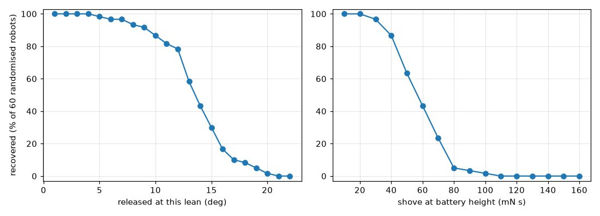
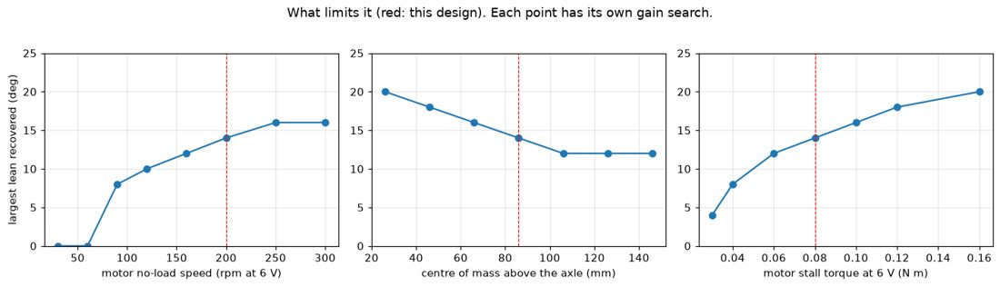

Stage 1: the bare-minimum balancer
Build this first. One TT motor with a wheel on each end of its shaft, two 18650s, an ESP32, an IMU and a motor driver, kept upright by a PID loop. Its one job is to show that a TT motor is fast enough to balance a body.
The nominal robot in MuJoCo running the firmware's filter and PID: released at 8 deg, then shoved forward and back (0.05 N s each). The run plotted below.

Front: the IMU on the core; BMS, switch and junction board on the mast. Rendered from the CAD.
- Wheels
- 2 on one TT motor
- Mass
- about 347 g
- Height
- 189 mm
- Parts
- about $34
- Brain
- PID at 400 Hz
- Stays up (sim)
- 86 %
Why it comes first
Build this before the full Tailwhip. One TT motor, a wheel on each end of its shaft, two 18650s on top, an ESP32, an IMU and a motor driver. One question: is a TT motor fast enough to keep a body upright with a PID loop?
The full robot counts on its TT motors to catch every fall. Stage 1 tests that one assumption with as little else as possible, so that if a TT motor is too slow or too weak, you find out with a robot that costs about $34 and four prints.
The three stages
| Stage | Robot | Proves | Adds |
|---|---|---|---|
| 1 (this) | One TT motor, two wheels on one shaft, PID | A TT motor can balance a body at all | Nothing: the minimum |
| 2 | Two TT motors, body held at a lean, a fixed weight on a bar or tail | The body can stand at an angle if a weight balances it; steering | Second motor, wheel sensors, the bar |
| 3 | The full Tailwhip | A moving tail as the counterweight; creature behaviours | Four servos, shells, learned control |
Each stage reuses the one before: stage 1's core, electronics and firmware carry into stage 2.
Stage 1 passes when the real robot stands for 60 s on a flat floor, recovers when released from 8 degrees,
and survives light pokes; and its measured wobble, motor speed and dead zone have been fed back into sim.py.
What the simulation says
Full results are under Reference at the bottom of this page.
- It balances. The nominal robot stands, recovers from a release at 13 degrees either way, and takes a 50 mN s shove at battery height (a 50 g ball arriving at 1 m/s).
- Left alone, 60 of 60 randomised robots stand for 20 s. With a random start lean and two shoves of 20-50 mN s, 257 of 300 (86 %) stay up. Nine in ten recover from a 9 degree release and a 30 mN s shove.
- The TT's speed is enough, with a little to spare. A shove uses up to 0.65 of the 0.68 m/s available. A 30-60 rpm gearmotor recovers from nothing in the same model; the TT's 200 rpm gets 14 degrees in that sweep.
- Torque, not speed, is the tighter limit. Doubling the stall torque takes the recoverable lean from 14 to 20 degrees. That is the case for stage 2's second motor.
- A lower battery helps. This was the surprise: with the centre of mass 66 mm above the axle instead of 86 mm it recovers 16 degrees, not 14, because the motor has less to hold. The mast could be 20 mm shorter.
- It will wobble. About +-1 degree at 4 Hz, from the 5 degrees of slop in the gearbox. That is normal for a TT balancer, and it is the first thing to compare against the real robot.
- It will wander. There are no wheel sensors, so it drifts about 40 cm in 20 s. Stage 2 fixes that.
- Getting up by itself is a coin toss. A fixed kick off the crash bar works for the nominal robot and 57 % of the randomised ones. Stand it up by hand.



Not covered: the model is left-right symmetric, so nothing tests the narrow track. See risks.Parts
Prices are the published Tailwhip BOM's pack unit prices, mostly unconfirmed.
| Part | Qty | About |
|---|---|---|
| Dual-shaft TT gearmotor 1:48 | 1 | $3.00 |
| 65 mm TT wheel | 2 | $4.00 |
| ESP32 DevKit (classic WROOM-32) | 1 | $7.00 |
| GY-521 MPU-6050 | 1 | $2.60 |
| MX1508 motor driver | 1 | $1.60 |
| Mini360 buck (set to 5.0 V) | 1 | $0.90 |
| 2S BMS with balancing | 1 | $1.60 |
| 2 x 18650 holder, series | 1 | $1.75 |
| 18650 cells | 2 | on hand |
| PTC fuse 3 A, power switch | 1 each | $1.30 |
| 470 uF 16 V, 100 nF (2), 100k (3), 33k | $0.95 | |
| JST-XH 2-pin pair | 2 | $1.60 |
| DC 5.5 x 2.1 mm jack on a pigtail | 1 | $0.70 |
| Perfboard scrap, header pins, four 20 cm jumpers | $1.35 | |
| M3 x 20 + nuts (4), M3 x 12 self-tap (4), M3 x 16 self-tap (2), M2.5 x 8 self-tap (2), 3 x 22 mm pins (2) | $2.00 | |
| Zip ties (12), 10 mm strap, wire | $2.00 | |
| PLA | 98 g | $1.60 |
| Total | about $34 |
An 8.4 V 1 A Li-ion charger is about $10 more if you do not have one.
Risks
- Narrow track. 52 mm between wheel centres; it tips sideways past about 20 degrees of roll. Flat floor only.
- Estimates. Stall torque (0.08 N m), no-load speed (200 rpm), slop (5 degrees) and dead zone are guesses until bring-up step 3 (Flash and tune). The torque sweep shows the result is sensitive to the first.
- Cheek plates. The core is 2.3 mm thick where it passes between the gearbox and each wheel.
- No steering. Both wheels are on one shaft. It goes where it is pointed.
- Wheel fit. Each wheel sits on 5.5 mm of a 9.1 mm stub; check for wobble.
- Motor driver margin. The MX1508's weaker channel is rated below the simulated current peaks; see
docs/electronics.mdfor the stronger channel and fallback boards.
Reference
Simulation results in full
Generated by sim.py test. MuJoCo, 800 Hz physics, the firmware's filter and PID at 400 Hz, IMU only. Motor and gearbox figures are estimates until the bench measurements exist.
Gains (u per rad, per rad/s, per m/s, per m): kp 1.62, kd 0.37, kv 1.94, kx 0.11, ki 0, dead-zone compensation 0.1.
Does it stay up
- Nominal robot, 20 s, released at 8 deg and shoved twice (0.05 N s): stays up. Pitch rms 3.1 deg, ends 5 cm from where it started, motor saturated 3 % of the time, peak wheel speed 0.65 m/s of 0.68 available.
- 300 randomised robots, 20 s, random start lean up to 5 deg, two shoves of 0.02-0.05 N s: 257 stay up (86 %). Median pitch rms 2.3 deg, median drift 41 cm (90th percentile 134 cm), 90th-percentile peak wheel speed 0.64 m/s.
- The ones that fell, on average: mu 0.694, stall 0.0686, w0 20.1, backlash_deg 5.51, motor_tau 0.0178, deadzone 0.0975, vbat 7.61, mass 0.987, com_dz -0.000755.
- Left alone (no shoves), 60 randomised robots, 20 s: 60 stay up; median wobble about its own balance point 0.77 deg rms, median drift 47 cm.
How much it can take
- Release angle: the nominal robot recovers from 13 deg either way; 90 % of randomised robots recover from 9 deg.
- Shove at battery height: nominal 50 mN s; 90 % of randomised robots take 30 mN s. For scale, 50 mN s is a 50 g ball arriving at 1 m/s.
What limits it
| Motor no-load speed (rpm) | 30 | 60 | 90 | 120 | 160 | 200 | 250 | 300 |
|---|---|---|---|---|---|---|---|---|
| Largest lean recovered (deg) | 0 | 0 | 8 | 10 | 12 | 14 | 16 | 16 |
| Centre of mass above axle (mm) | 26 | 46 | 66 | 86 | 106 | 126 | 146 |
|---|---|---|---|---|---|---|---|
| Largest lean recovered (deg) | 20 | 18 | 16 | 14 | 12 | 12 | 12 |
| Stall torque at 6 V (N m) | 0.03 | 0.04 | 0.06 | 0.08 | 0.1 | 0.12 | 0.16 |
|---|---|---|---|---|---|---|---|
| Largest lean recovered (deg) | 4 | 8 | 12 | 14 | 16 | 18 | 20 |
Getting up by itself
Lying on a crash bar at 25 deg, a fixed kick (roll away for 0 ms, then full power under the body, hand over to the PID inside 15 deg) gets 57 % of 40 randomised robots back up; nominal robot: yes.
Files
| File | What |
|---|---|
stage1.py |
Geometry, mass table, design check, renders, print STLs |
sim.py |
MuJoCo model, the firmware's controller, gain search, all experiments, the clip |
firmware/stage1_balance/ |
The ESP32 sketch |
docs/electronics.md, docs/schematic.svg, docs/wiring.svg |
Electronics design and diagrams |
docs/mechanical.md |
Printed parts, print settings, fasteners, assembly order |
out/design.md, out/sim.md |
Generated numbers |
out/gains.json, out/results.json, out/model.json |
Gains, raw results, the numbers the sim is built from |